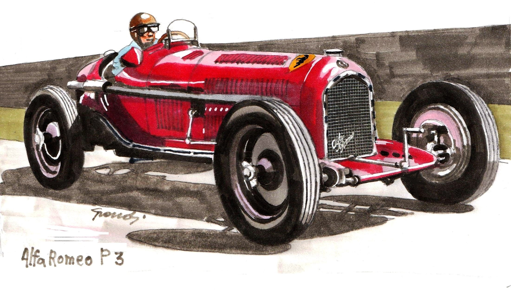
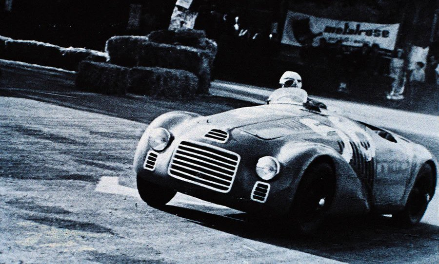
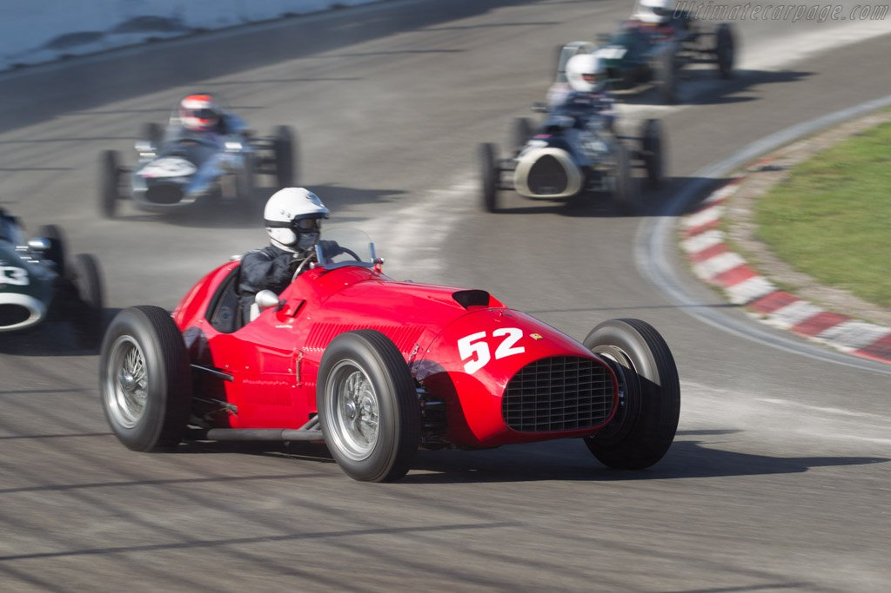
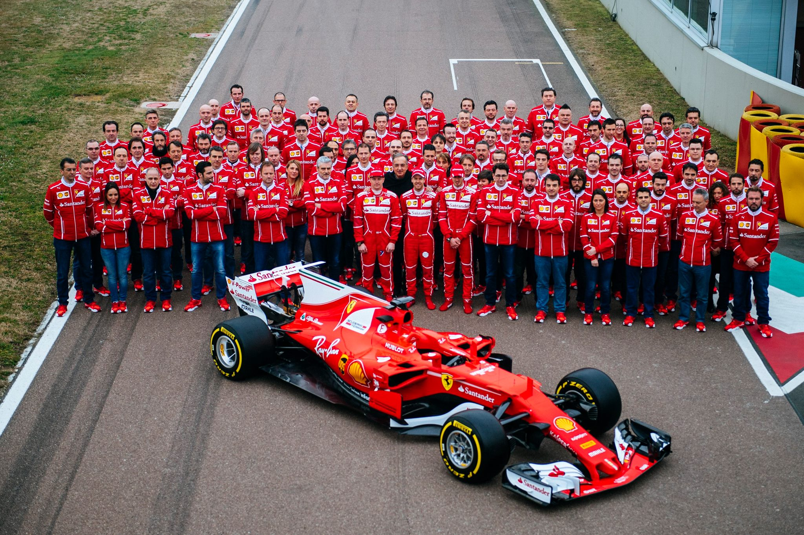

Történelem
Az alapítás

Enzo Ferrari 1929-ben alapította meg a Scuderia Ferrarit Modenában, kezdetben Alfa Romeo versenyautók kezelésére. A csapat hamar az olasz motorsport meghatározó szereplőjévé vált. Enzo igazi tehetsége a szervezésben és a mérnökök irányításában mutatkozott meg — így született meg az a struktúra, amely a Ferrari sikerének alapját képezte.
Az első Ferrari

Az első saját tervezésű Ferrari, a 125 S, 1947-ben gurult ki a maranellói gyárból. A 1.5 literes V12-es motor 118 lóerőt teljesített — ez volt a kezdete egy legendának. Az autó első győzelmét Franco Cortese szerezte Rómában, mindössze néhány héttel a debütálás után.
Belépés az F1-be

A Formula 1-es világbajnokság első szezonjától, 1950-től a Ferrari jelen van a paddockban. Azóta egyetlen szezont sem hagytak ki — ők az egyetlen csapat, aki minden évben versenyez. Az első győzelmet José Froilán González szerezte 1951-ben Silverstone-ban, ahol a Ferrari legyőzte az addig verhetetlen Alfa Romeót.
16 konstruktőri cím

A Scuderia Ferrari a legsikeresebb csapat a Formula 1 történetében, 16 konstruktőri világbajnoki címmel. Az első bajnoki évet 1961-ben ünnepelték, a legutóbbit 2008-ban. Michael Schumacher rekordszámú ötös sorozata 2000–2004 között a Ferrari aranykorát jelentette.
Történelem kvíz
1. Mikor alapította Enzo Ferrari a Scuderia Ferrarit?
2. Melyik volt az első saját tervezésű Ferrari modell?
3. Melyik évtől versenyez a Ferrari a Formula 1-ben?
4. Hány konstruktőri világbajnoki címet szerzett eddig a Ferrari?